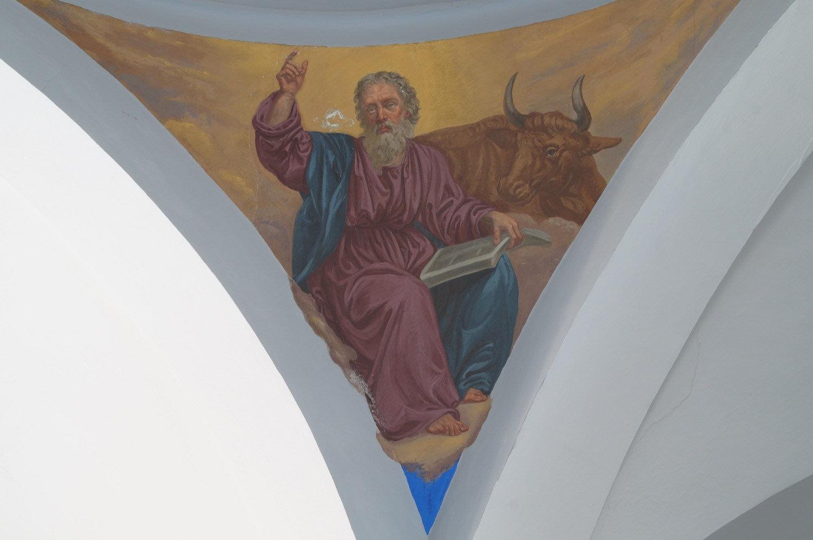

San Lucas era médico de profesión. Aunque no fue uno de los doce apóstoles, escribió uno de los Evangelios canónicos y el libro de los Hechos de los Apóstoles. Además, según la leyenda, pintó los primeros retratos de la Virgen María. Acompañó a san Pablo en sus viajes misioneros a Macedonia, Cesarea y Roma, entre otros lugares. Después de la muerte de san Pablo, volvió a Grecia, donde predicó hasta su muerte, que se cree que fue por causas naturales.
En este fresco del año 1863, el pintor italo-mallorquín Francesc Parietti Rigo lo representó sosteniendo un libro que simboliza su papel como escritor y acompañado de un buey, que es su símbolo en el tetramorfos, la representación simbólica de los cuatro evangelistas. En el bestiario popular, el buey es signo de sacrificio, y este es uno de los temas centrales del Evangelio de san Lucas: empieza hablando del sacrificio que ofreció Zacarías a Dios y es también el que trata con mayor extensión el episodio de la Pasión de Cristo.